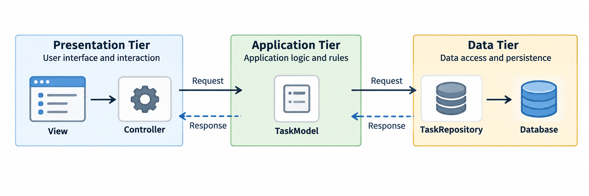

Roadmap
The persistent Task List already works. We will give its application operations a clear home.
Identify the application work in the Controller.
Move that work and the Repository dependency into the Model.
Trace a successful Add and a rejected title.
Test the task rule without opening the user interface.
The Persistent Task List
Our MVC and Repository example already separates the screen from SQL.
| Class | Current responsibility |
|---|---|
TaskView | Displays tasks and provides controls. |
TaskController | Handles events, checks titles, saves, and reloads. |
TaskModel | Holds the task list shown by the View. |
TaskRepository | Defines task storage operations. |
JdbcTaskRepository | Implements those operations with JDBC. |
The Controller knows both the Model and the Repository.
The Controller Has Two Jobs
The current event handler contains both screen interaction and application work.
String title = view.getEnteredTitle();
if (title.isBlank()) {
view.setStatus("Title required");
return;
}
// Inside the existing try block:
repository.add(title);
model.replaceTasks(repository.findAll());
view.showTasks(model.getTasks());Which lines handle the screen, and which perform the task operation?
Example: persistence-basics/repository/TaskController.java
Separating the Two Jobs
Adding a task includes application work that can move out of the button handler.
The Controller reads the field and updates the screen.
The Model checks the title, asks the Repository to save, and reloads the task list.
The Repository continues to handle JDBC and SQL.
The Controller asks the Model to perform the operation with model.addTask(title).
Presentation, Application, and Data
| Responsibility | Main job | Task List classes |
|---|---|---|
| Presentation | Handle interaction and display. | TaskView, TaskController |
| Application | Apply rules and manage task state. | TaskModel, TaskItem |
| Data | Save and load tasks. | TaskRepository, JdbcTaskRepository, database |
This example teaches the logical layers of three-tier architecture in one Java program.
Task List Across Three Tiers

MVC and three-tier describe different groupings. Here, the MVC Model owns application work.
Before and After the Refactoring
The Repository dependency moves from the Controller to the Model.
| Before | After | |
|---|---|---|
| Controller uses | View, Model, Repository | View, Model |
| Model uses | Task data | Task data, Repository |
| Title rule | Controller | Model |
| Save and reload | Controller coordinates | Model coordinates |
The Controller supplies task data to the View. The JDBC implementation still owns SQL.
Presentation: TaskController
The Controller delegates the operation and displays its outcome.
public void addClicked() {
try {
model.addTask(view.getEnteredTitle());
view.showTasks(model.getTasks());
view.clearEnteredTitle();
view.setStatus("Task saved");
} catch (IllegalArgumentException
| RepositoryException exception) {
view.setStatus(exception.getMessage());
}
}The Controller has no Repository field.
Example: three-tier/TaskController.java
Application: TaskModel
The Model checks the title, saves the task, and reloads its state.
public void addTask(String title) {
if (title == null || title.isBlank()) {
throw new IllegalArgumentException("Title required");
}
repository.add(title.trim());
reload();
}Every caller of addTask goes through the same title check.
Example: three-tier/TaskModel.java
Data: TaskRepository
The Model uses task storage operations through an interface.
public interface TaskRepository {
List<TaskItem> findAll();
void add(String title);
void setDone(long id, boolean done);
void delete(long id);
}JdbcTaskRepository implements these methods with JDBC and SQL. JDBC objects stay inside that implementation.
Example: three-tier/TaskRepository.java and JdbcTaskRepository.java
Object Construction at Startup
The application creates the objects and passes each dependency through a constructor.
DatabaseConfig config =
DatabaseConfig.load("/database.properties");
TaskRepository repository = new JdbcTaskRepository(config);
TaskModel model = new TaskModel(repository);
TaskView view = new TaskView();
TaskController controller = new TaskController(model, view);
controller.connectHandlers();The Controller receives the Model and View. The Model receives the Repository. The View has no Model dependency.
Example: three-tier/TaskThreeTierApp.java
Trace an Add Request
A user enters Review MVC and clicks Add.
Which class receives the button event?
Which class checks the title?
Which class executes the SQL?
Where does the View get the updated task list?
Predict the calls before the walkthrough.
Saving and Reloading the Task
The Controller reads the field and calls
model.addTask(title).The Model checks the title and calls
repository.add(title.trim()).JdbcTaskRepositoryinserts the database row.The Model calls
reload(), which reads tasks back through the Repository.
// TaskModel
private void reload() {
tasks = List.copyOf(repository.findAll());
}The Model now holds the saved tasks, including database-generated IDs.
Refreshing the Screen
After model.addTask returns successfully, the Controller passes the updated task list to the View.
// TaskController
view.showTasks(model.getTasks());
// TaskView
public void showTasks(List<TaskItem> tasks) {
taskList.getItems().setAll(tasks);
}The View displays the supplied tasks. The Controller then clears the field and displays Task saved.
Example: three-tier/TaskView.java
When the Title Is Blank
Predict whether the Repository is called when the user enters only spaces.
The Controller passes the entered text to
model.addTask.The Model throws
IllegalArgumentExceptionbefore saving or reloading.The Controller catches the exception and displays
Title required.
The Repository is never called. The task list and entered text stay as they were.
Testing the Rule Without the Screen
The test defines an in-memory Repository and calls the Model directly.
TaskModel model = new TaskModel(new InMemoryTaskRepository());
assertThrows(IllegalArgumentException.class,
() -> model.addTask(" "));
model.addTask(" Practice three-tier ");
assertEquals("Practice three-tier",
model.getTasks().getFirst().title());This checks the title rule and saved state without JavaFX or a database.
Example: three-tier/TaskModelTest.java
Classify Each Responsibility
Choose presentation, application, or data.
Display
Task saved.Handle the Add button event.
Reject a blank task title.
Reload Model state after a change.
Execute an
INSERTstatement.Convert a database row into a
TaskItem.
Responsibility Check
Presentation: display the message and handle the button event.
Application: reject a blank title and coordinate reloading Model state.
Data: execute the SQL and map each row to a task.
Follow-up: a new rule limits task titles to 100 characters. Which class should enforce it for every caller of addTask?
TaskModel. The Controller displays the outcome, and the Repository performs storage operations.
Key Takeaways
The Controller handles user interaction and supplies display data to the View.
The Model owns task rules and coordinates persistence.
The Repository implementation owns JDBC and SQL.
Moving the operation into the Model makes it available to other callers and direct tests.
Next: keep this object graph and let Spring create and connect the objects.